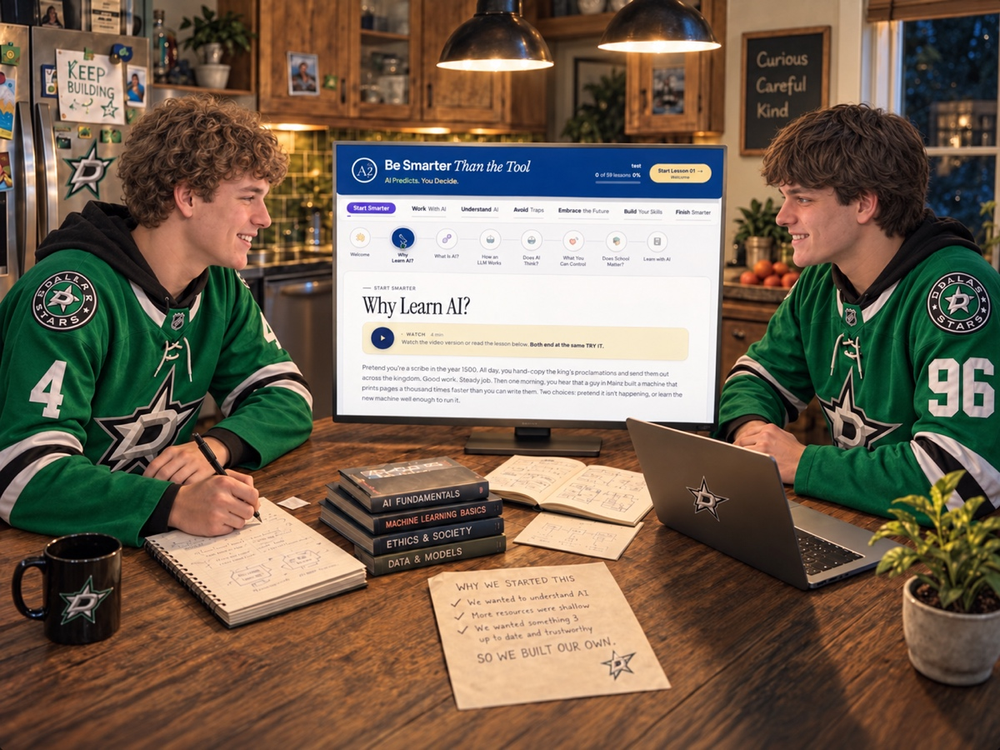
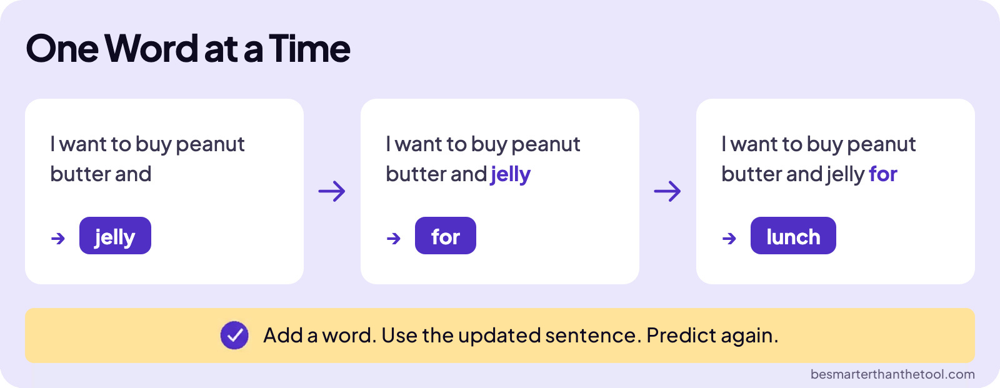

Be SmarterThan the Tool
Built by high school students.
For high school students.
Understand AI, use it well, and think for yourself. A free course to help you get ready for what comes next.
- Free
- No account required
- At your own pace
- Earn a certificate

Read why we built this
We started an AI club at our high school and wanted answers to the questions that mattered to us. We built this course with guidance from our dad, drawing on his teaching experience.
What you’ll gain
- Get results
- Ask better questions and get more useful results.
- Get smart
- Understand how AI learns, predicts, and answers.
- Get wise
- Spot mistakes and decide what to trust.
- Get prepared
- Explore what AI means for school, work, and your future.
- Get ahead
- Put your knowledge to work in your own projects.
Watch or read. Then try it.
Choose how you learn each lesson, put it into practice with TRY ITs and LABs, and return whenever you’re ready.
In “What’s an LLM?”, see how AI builds an answer one word at a time. Then write a story with ChatGPT to explore how each new sentence shapes what comes next.

One Word at a Time
I want to buy peanut butter and
jelly
I want to buy peanut butter and jelly
for
I want to buy peanut butter and jelly for
lunch
Add a word. Use the updated sentence. Predict again.
besmarterthanthetool.com
Better together, too.
Taking the course with a club, class, or friends? Explore discussion questions and group exercises as you learn.
Your curiosity is all you need.
No experience required. Learn at your own pace and earn a certificate by passing the final exam.
Frequently asked questions
Who is this course for?
We built this course for high school students, but anyone curious about AI is welcome, including teachers, parents, and other learners. You don’t need any prior AI knowledge or coding experience.
How much time does it take?
There are about three hours of video, plus time for practice and the final exam. You can read the lessons instead, and your total time will depend on how much you explore the activities. Take a lesson at a time and return whenever you’re ready.
Will the course stay free? Do I need paid tools?
The course is free, and we’re committed to keeping it free. The activities are designed for free tools: you’ll use ChatGPT and a Google account for some of the hands-on work, with setup guidance in the Welcome lesson. Those services have their own account requirements and usage limits; no paid subscription is required for the course.
Can I take it with a class, club, or friends?
Absolutely. Choose a lesson to watch or read together, then pick a discussion question or group exercise from that lesson. The group directory is organized by course section, so you can start with Start Smarter or find the lesson your group is studying. Explore group activities →
Do I need to complete every activity?
TRY ITs and LABs are part of the learning. We encourage you to use them to put the lessons into practice, but they don’t lock your progress through the course. Discussion questions and group exercises are separate options for learning together. Your certificate is earned by passing the final exam.
Can I earn a certificate?
Yes. Score 80% or higher on the 25-question final exam to earn your certificate of completion, which you can print or save as a PDF. There’s no time limit, and you can review the explanations and try again. View a sample certificate ↗
How do I save my progress and come back?
Your progress saves automatically in your browser. Return using the same browser on the same device to continue where you left off; progress doesn’t sync to another browser or device. Clearing the site’s stored data or ending a private/incognito session removes that saved progress.
Do I need an account, and what information is saved?
No course account or password is required. We record your first name or nickname and country when you start, and your certificate name, score, and completion date when you earn a certificate. Your lesson progress stays in your browser; those course records don’t let you restore it on another device.